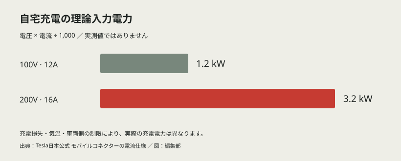

自宅200Vと充電アクセサリー。買う前に確認すること。
モバイルコネクター・ウォールコネクター・CHAdeMOを同じ「充電器」でまとめない。対応規格と販売情報を分けて見る。

Nashucks / Wikimedia Commons · CC0 · 縮小版。表示枠に合わせたトリミングあり。
200Vはコンセントの規格も確認
Tesla公式のモバイルコネクター案内では、EV用200V（JWDS-0033）アダプターの最大出力電流は16Aです。専用回路やブレーカー・接地・適合コンセントの判断は施工業者へ相談してください。200Vという電圧だけで既存のエアコン用コンセントなどへの接続可否は判断できません。
充電量の目安を比べる
下の図は電圧×電流で計算した交流入力の理論値です。100V×12Aは1.2kW、200V×16Aは3.2kW。充電損失・気温・バッテリー状態・車両側制限を含まないため、実際のバッテリー充電量や所要時間はこの値と異なります。
| 対象 | 確認するもの | 本誌の初回確認 |
|---|---|---|
| モバイルコネクター | 日本向け200Vアダプター・本体・販売条件 | 仕様は公式サポート参照／在庫・価格は未確認 |
| ウォールコネクター | 本体仕様・施工費・設置条件 | 公式カテゴリ表示79,200円（2026-10-30）／在庫未確認 |
| CHAdeMOアダプター | 製品世代・車両適合・充電器適合・保証 | 新型は2027年1月・95,900円で発売予定の公式案内／現在の在庫は未確認 |

販売ページと在庫は別の情報
2026年10月30日の公式充電カテゴリ閲覧ではウォールコネクター79,200円の表示を確認しました。工事費込みの見積額ではなく、現在の購入可能数を保証するものでもありません。モバイルコネクターやCHAdeMOアダプターの在庫と価格は、確実に取得できないため未確認としています。
新型CHAdeMOは2027年1月発売予定の案内
Tesla Japanの2026年10月23日発表では、新しいCHAdeMOアダプターは2027年1月、95,900円での発売予定です。発売予定は現在の在庫を意味しません。同時発表のV2L給電アダプターも別商品で、新しい対象車に限定されるため、既存車へ使えると自己判断しないでください。
CHAdeMOはマニュアルの存在だけで買わない
TeslaはCHAdeMO対応アダプターの製品ガイドを公開していますが、それだけでは新品の現在の販売・在庫や、すべての車両・充電設備との互換性は分かりません。新旧製品の仕様、対象車、正規保証を商品説明で確認します。中古・転売品の適合性や安全性は本誌では保証しません。
在庫の自動監視ルール
自動更新では公式商品の構造化データにInStockやOutOfStockなどの明示がある場合だけ記録します。商品掲載、購入ボタン、検索結果だけから在庫ありとは判定しません。アクセス制限やページ構造変更のときは未確認を表示し、最後の成功日時を残します。

Darin Caggiano / Wikimedia Commons · CC BY-SA 4.0 · 縮小版。表示枠に合わせたトリミングあり。